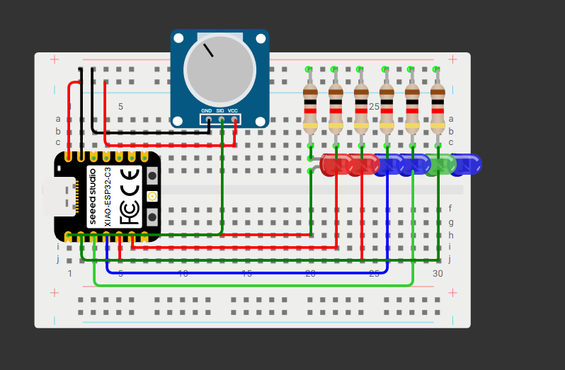

<div class="textcontainer">
<p class="margin"> </p>
<h2>Week 4: Microcontroller Programming</h2>
<h3>Documentation:</h3>
<h4>
For This Week's assignment I used:
<br>
- 1 Potentiometer,
<br>
- 1 micro-controller XIAO ESP32-C3,
<br>
- 6 through-hole 220 Ohm Resistors ,
<br>
- 6 Leds (Light Emitting Diode),
<br>
- Some Cables,
<br>
- 1 Breadbord.
<br> <br>
To learn how to use the potentiometer I used arduino's documentation <a href="https://docs.arduino.cc/learn/electronics/potentiometer-basics/">on the usage of potentiometer</a>. <br>
To get a better understanding of what a led is and how to light it up without blowing it up (I did many), I used <a href="https://learn.sparkfun.com/tutorials/light-emitting-diodes-leds"> sparkfun electronics' led tutorial</a>. <br>
To create a scheme I used <a href="https://wokwi.com/"> Wokwi</a>. <br>
Other than that special thanks to Bobby for helping me with debugging the code. <br>
</h4>

<p style = "font-size: 24px;"> First I connected the grounding port of my microcontroller to +, and my 5V port to - (you can do eithar way). Then, I wired my potentiometer
to the breadbord (If you are making this project with the same board as me, make sure you wire the Signal port to either D0, D1
or D2 because those are the only ports which can read analog data, but if you are using another microcontroller you should check the datasheet of it
to find ports that have analogue read feature.). Then, I connected one side of my resistance to the grounding and the other side next to one of my Leds.
Finally, I wired each of my leds to a digital input pin on my microcontroller.</p>
<br><br>
<style>
body {
font-family: sans-serif;
margin: 2rem;
line-height: 1.5;
}
pre {
background: #f5f5f5;
border-radius: 4px;
padding: 1rem;
overflow-x: auto;
}
code {
font-family: Consolas, Monaco, 'Andale Mono', 'Ubuntu Mono', monospace;
display: block;
white-space: pre;
}
</style>
</head>
<body>
<h2> Coding Part:</h2>
<p style = "font-size: 24px;">You can see the explanation in the code</p>
<pre><code>// Define which digital pins the LEDs are on:
int leds[] = { D1 /* LED1 on pin D1 */,
D2 /* LED2 on pin D2 */,
D3 /* LED3 on pin D3 */,
D4 /* LED4 on pin D4 */ };
const int numleds = 4; // Total number of LEDs in the array
// Define the analog pin for the potentiometer wiper:
const int potPin = A0; // A0 reads from 0 to 4095 on the ESP32 ADC (don't forget to indicate it as A0 not D0)
void setup() {
// Initialize each LED pin as an output and turn it off:
for (int i = 0; i < numleds; i++) {
pinMode(leds[i], OUTPUT); // Set this pin to OUTPUT mode
digitalWrite(leds[i], LOW); // Start with the LED off
}
// Initialize the potentiometer pin as an input:
pinMode(potPin, INPUT); // A0 will read the pot voltage
}
void loop() {
// Read the potentiometer value (0 to 4095):
int pot_value = analogRead(potPin);
// Map that reading to how many LEDs should light (0–4):
int led_value = map(pot_value, 0, 4095, 0, numleds + 1);
// Turn LEDs on or off based on the mapped value:
for (int i = 0; i < numleds; i++) {
digitalWrite(leds[i], (i < led_value) ? HIGH : LOW);
}
// Small delay to smooth updates:
delay(100);
}
</code></pre>
</body>
</html>
<br> <br>
<p style = "font-size: 24px;"> After some debugging the code finally worked !!!</p>
<img src="Led+Potentiometer.gif"
alt="Gif of my circuit working."
class="img-fluid rounded float-start me-3 mb-3">
</div>